Cadascun porta tres coses: el seu poder al còmic,
la seva superarma i què vol dir dins d'un equip de debò.
La tercera és la que fa que aquest relat visqui dins d'una eina de gestió i no en un fullet a part.
El repartiment no està tancat. Els 14 primers són
els que surten als còmics i als vídeos; els que van darrere són de la gent que hi ha entrat amb el kit. Un personatge
del Comando és una persona de debò amb el que sap fer i el que pot deixar.
11 de 14 ja tenen cara
Les cares surten de Portada del segon còmic · la banda sencera, que és l'única imatge on
hi surten tots tocant alhora. Els que encara no en tenen ho diuen: un marc buit és més
honest que la cara d'un altre.
01 / 14
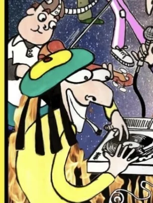
Mazinguer
Líder estratega i DJ
Poder
Coneix el pla i guia la banda. Sense superpoder aparent: l'ego perdut és el seu poder
Superarma
La Bomba Disco i els plats de DJ
En un equip
Qui munta la plataforma i atrau els primers nodes. El cap de colla
On surt
Còmic 1
«Mazinguer: aunque no lo parecía siempre sabía lo que hay que hacer.»
02 / 14
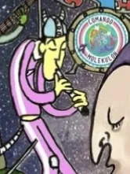
Horacio Motomachi
El savi que rep el mandat
Poder
Coprotagonista de l'encàrrec original. Converteix l'experiència en relat
Superarma
La Bomba Disco i els plats de DJ
En un equip
La visió de conjunt: qui sap explicar cap on va tot plegat
On surt
Còmic 1
«Horacio: muy sabio, buena onda y tener un palacio.»
03 / 14
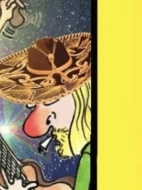
Guiri-Guay
Cuidador i sanador
Poder
Curació neuro-rítmica: sana ferides i torna a moure el cervell del grup
Superarma
Guitarra acústica country
En un equip
Qui té cura de l'equip: sosté la moral i cura les friccions abans que es podreixin
On surt
Còmic 1
«Con mi guitarra curo heridas, bailando se mueven las neuronas.»
04 / 14
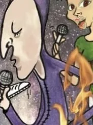
Purpleman
Transmutador
Poder
Entra a les tenebres i els gasos tòxics i els torna benestar immediat
Superarma
El Rayo Eliminador
En un equip
Qui absorbeix la toxicitat de l'ambient i la torna clima. Si no té nom, no ho fa ningú
On surt
Còmic 1
«Elimino a los malos olores con mi rayo eliminador y huele todo a flor y amor.»
05 / 14
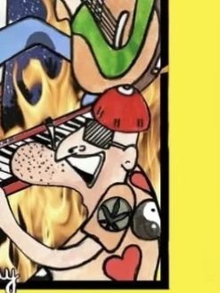
Retrat a confirmar per l'autor
Afrodita
Motor passional
Poder
Holometabolisme: la seva identitat musical li trenca l'armadura que el mantenia alienat
Superarma
El ritme Soul Train
En un equip
El talent amagat. Passió en cru que només necessita un lloc segur per treure's la cuirassa
On surt
Còmic 1
«Sexy motherfunky mito. Piensa con el corazón.»
06 / 14
Encara sense retrat
El Aviador
Suport tàctic
Poder
Orientació i rescat in extremis: apareix del cel quan l'equip s'ha perdut
Superarma
El Bajo Volador
En un equip
L'executor hiperespecialitzat. Ni el més carismàtic ni el líder: el que desencalla projectes
On surt
Còmic 1
«No tiene mojo, no tiene duende, no tiene don, pero tiene un bajo volador.»
07 / 14
Encara sense retrat
Pigmentón
Mapador i dissenyador
Poder
Assigna identitats. Capaç d'il·luminar fins i tot els forats negres
Superarma
El Güengüentón i el pinzell creador
En un equip
Qui dibuixa la xarxa i dona a cadascú el color que li toca perquè pugui operar
On surt
Còmic 1
«De colores pintó el maestro Pigmentón el mundo para que todo pueda tener el color que le corresponda.»
08 / 14
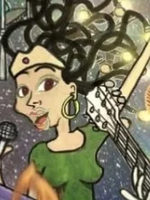
La Medusa Andaluza
Connectora · el hub
Poder
Sincronització i fusió cultural. És qui dona llum interconnectant tot el grup
Superarma
Cables connectors i una ampolla de Jack Daniel's
En un equip
El node central que creua informació entre parts que no es parlaven
On surt
Còmic 1
«En mi cabeza se cruzan los cables ¿Te echo uno tío? Pa' que conectes con mi són.»
09 / 14
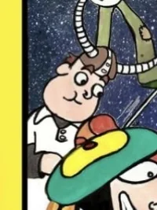
Retrat a confirmar per l'autor
Electroplasman
Impulsor de recursos
Poder
Injecta liquiditat al sistema nerviós central del comando i a les naus que no enlairaven
Superarma
La viola · violí electrònic
En un equip
Qui porta el capital —diners o energia— que fa passar un projecte de aturat a enlairat
On surt
Còmic 1
«Parecía muy tranquilo pero era un volcán. Toca Shostakovich como el gasgas.»
10 / 14
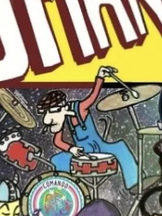
El Anguila
Bateria
Poder
S'escapoleix de qualsevol lloc: on el grup queda encallat, hi troba l'escletxa
Superarma
La bateria i la percussió
En un equip
Qui marca el ritme operatiu. La pinya no aguanta sense un compàs
On surt
Còmic 1
«El Anguila: con un buen groove y una birra se espabila.»
11 / 14
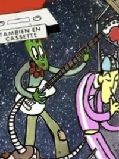
Barbamuda
Segona baixista
Poder
Fa supertratges i ensenya des del silenci. No explica: deixa que ho vegis
Superarma
El baix i el silenci tàctic
En un equip
L'estabilitat estructural. Qui no es mou quan tot es mou és el que evita la caiguda
On surt
Còmic
«Barbamuda: que habla solo cuando debe y todo se la suda.»
12 / 14
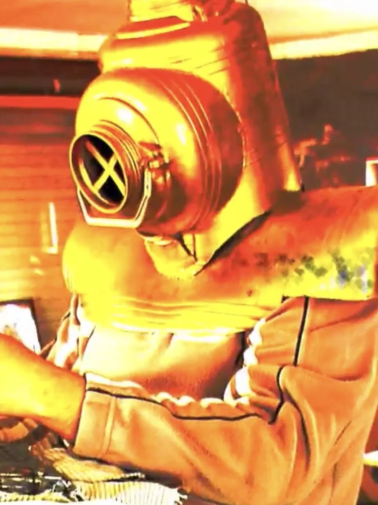
Del seu videoclip
Reciclator
Fabricant de superarmes
Poder
Construeix les superarmes de la banda a partir del que els altres han llençat
Superarma
El taller: el que ja existeix i ningú volia. D'allà en surten la Bomba Amor i el Rayo Cagón
En un equip
Qui fa que no calgui comprar res nou perquè ja hi és, en un altre lloc i amb una altra forma
On surt
Vídeo
13 / 14
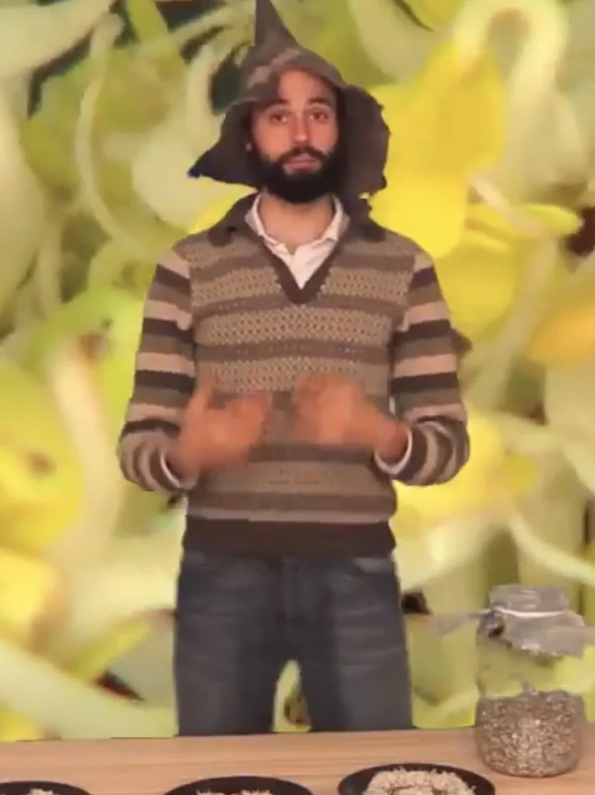
Del seu videoclip
Supergerminador
Mestre del germinat
Poder
Ensenya a germinar per menjar superaliments. I canta amb la seva rialla
Superarma
Les llavors, i la pròpia rialla
En un equip
Qui ensenya el mètode en comptes de fer la feina: el que ensenya es replica sol i no cal tornar-lo a comprar
On surt
Vídeo i web pròpia
14 / 14
Encara sense retrat
Fraktalman
Ordre a partir del caos
Poder
Converteix el caos en ordre sense aplanar-lo
Superarma
La forma que es repeteix a totes les escales
En un equip
El que funciona en un lloc té la mateixa forma en un altre. Replicar sense uniformar
On surt
Té tema propi
«Es uno y son mil millones… convierte el caos en orden.»
Darrere dels 14 del còmic hi van els de la gent que s'hi apunta, un cop aprovats. Carregant…
I el teu
El teu nom de guerra, fins a cinc superpoders i les teves superarmes —el que
saps fer i el que pots deixar—, i com es veu el personatge. Quatre preguntes, sense compte de
res. Si l'envies i l'autor l'aprova, surt en aquesta mateixa llista, darrere dels del còmic.
Hi surt el personatge, no la persona.